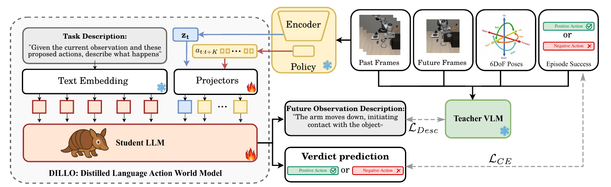

LIBERO SPATIAL · CHUNK 00
● Negative action
Bowl next to the cookie box
“The end-effector moves left, forward, and up… taking the gripper away from the target bowl.”
Verdict matches label · description score 0.75Accepted at ECCV 2026
Describe-Then-Act: Proactive Agent Steering via
Distilled Language-Action World Models
DILLO turns a policy’s internal state and planned actions into human-readable foresight—without rendering the future.
Paper
Deploying safety-critical agents requires anticipating the consequences of actions before they are executed. DILLO challenges the assumption that visual simulation is necessary for failure prevention: a trained policy’s latent state, together with its planned actions, already encodes enough information to anticipate action outcomes. Through cross-modal distillation, a privileged Vision Language Model annotates offline trajectories while a latent-conditioned language model learns to predict semantic outcomes. At inference time, the resulting text-only path can preview behavior and reject risky action chunks without visual generation.
Method
The teacher sees the future during offline training. The student learns to recover the useful signal from compact policy representations, then becomes the only model needed at inference.

A VLM teacher sees past and future frames from collected trajectories.
It produces semantic descriptions and positive / negative action labels.
DILLO learns from policy latents, planned action chunks, and teacher targets.
ztpolicy latent+at:t+kaction chunkWhat is likely to happen next?
Accept or resample
Task-relevant geometry, distance, and interaction cues are already encoded by the policy.
Natural language makes anticipated physical outcomes legible to human supervisors.
Negative chunks are rejected before execution; the policy can sample a safer alternative.
Results
DILLO replaces the expensive visual prediction-and-evaluation loop with a single latent-conditioned language model.
Approximate visual-baseline latency reported in the paper; DILLO measured on consumer hardware.
episode success rate, with +9.3 pp average improvement across tasks.
Single-task manipulation policies.
Single- and multi-task policy evaluation.
No raw visual observation is accessed by DILLO at inference.
Qualitative gallery · DILLO 1B
Each example pairs a prediction generated from the policy latent and proposed actions with the future trajectory that actually followed. DILLO does not observe these future frames at inference time.
“The end-effector moves left, forward, and up… taking the gripper away from the target bowl.”
Verdict matches label · description score 0.75“The end-effector moves right, forward, and down toward the bowl… preparing to grasp it.”
Verdict matches label · description score 0.917“The end-effector moves toward the drawer handle… preparing to grasp or engage with it.”
Verdict matches label · description score 1.0“The gripper retreats away from the wine bottle… without engaging with the task-relevant object.”
Verdict matches label · description score 1.0“The gripper moves toward the book… positioning itself to initiate the pick-up motion.”
Verdict matches label · description score 0.833“The gripper moves toward the basket area… preparing to grasp one of the target objects.”
Human-rated description · selected from the 1B study setFreshly reproduced rollout
Seed 42, LIBERO Spatial. The baseline and DILLO complete the task; the short third clip is a candidate action DILLO rejected before execution.
All clips use DILLO Gemma-3 1B. Gallery descriptions come from the released qualitative evaluation; steering clips were reproduced locally from the released ACT and DILLO checkpoints.
Citation
@inproceedings{pappa2026describethenact,
title = {Describe-Then-Act: Proactive Agent Steering via
Distilled Language-Action World Models},
author = {Massimiliano Pappa and Luca Romani and Valentino Sacco and
Alessio Palma and St\'ephane Lathuili\`ere and Fabio Galasso and
Xavier Alameda-Pineda and Indro Spinelli},
booktitle = {European Conference on Computer Vision (ECCV)},
year = {2026}
}